Pretpark Management Systeem
Kleine OOP-applicatie voor pretparkbeheer (tickets, medewerkers, attracties, bezoekersstromen). Gebouwd in PHP met OOP-principes.
Branches:
Medewerker
Attractie
Bijdrage:
Styling: CSS met variabelen voor consistentie.
Kwaliteit: PHPStan checks en uitgebreide PHPDoc-annotaties.
Database setup: Tabellen/Kolommen.
Styling: CSS met variabelen voor consistentie.
Kwaliteit: PHPStan checks en uitgebreide PHPDoc-annotaties.
Database setup: Tabellen/Kolommen.
Tech Stack:
-
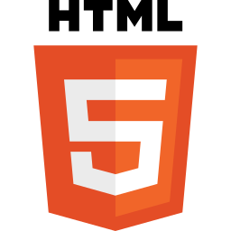
HTML5 -
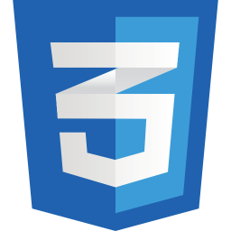
CSS -
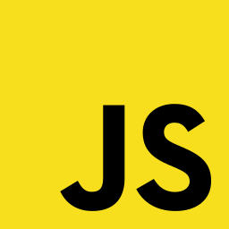
JavaScript - PHP
-
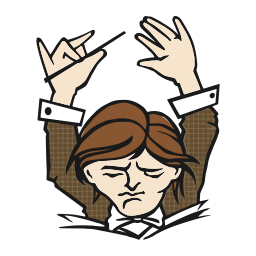
Composer - Smarty
-
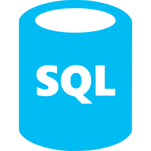
SQL
Belangrijkste features
- Attractiebeheer: CRUD, status (open/dicht/storing), onderhoudslog, uptime-overzicht
- Medewerkersmodule: CRUD, rollen & rechten, roosters met overlap-check
- Ticket- & bezoekersstromen: wachttijd-ETA per attractie, capaciteit per rit
- Dashboards: bezetting, storingen, onderhoud en personeel in één overzicht
- Data & kwaliteit: MySQL-relaties, seeding, CSV import/export, PHPStan-checks
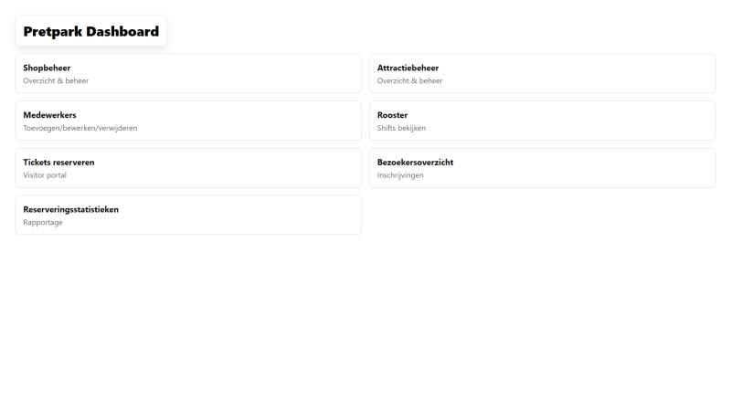
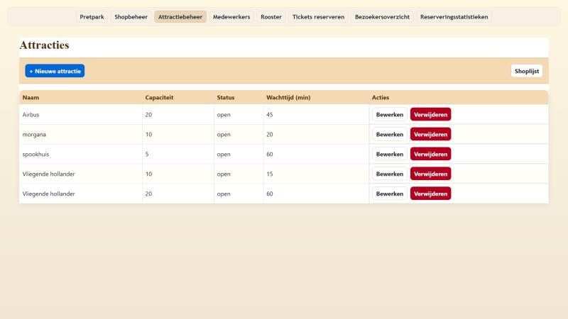
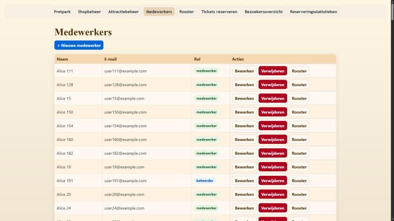
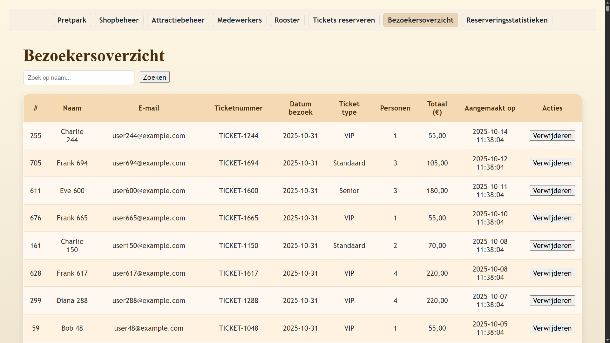
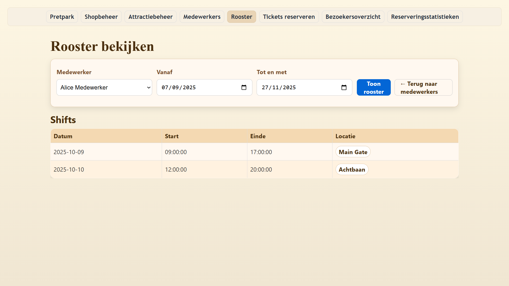
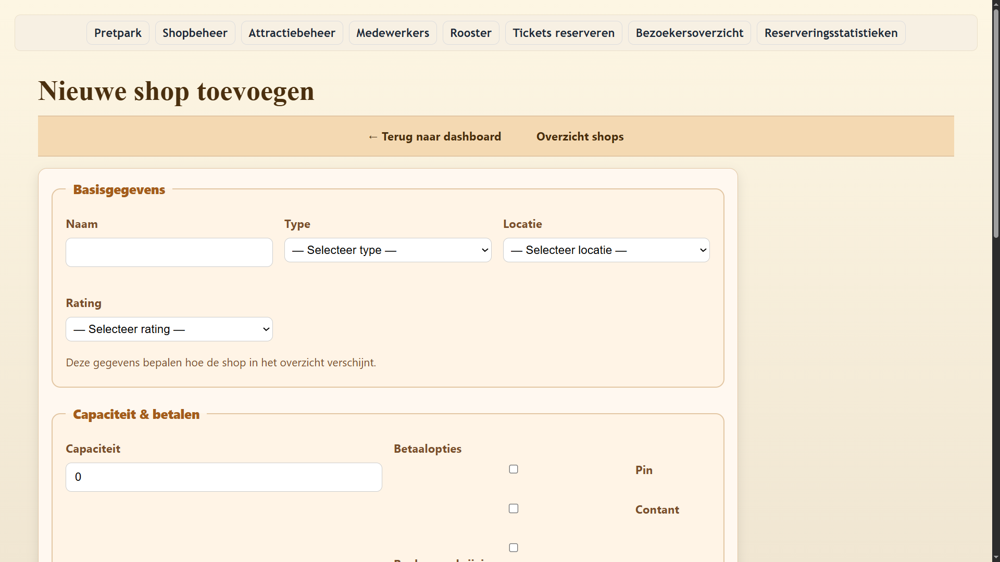
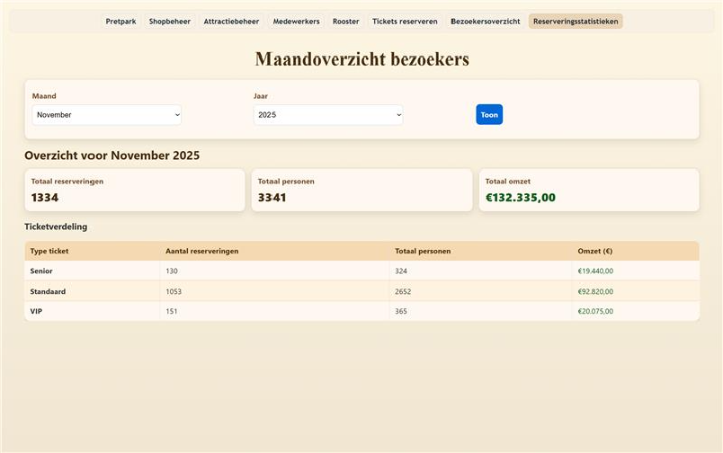